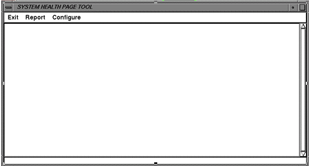
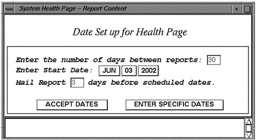
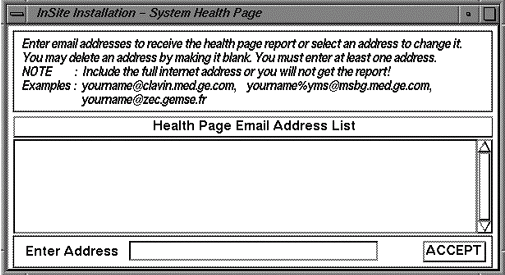
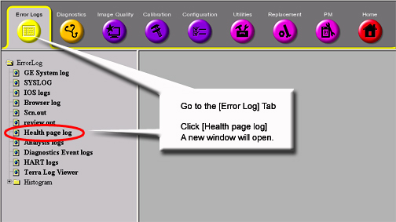

- 00000018WIA308A8F20GYZ
- id_131069922.0
- Jul 19, 2019 11:00:54 AM
System Health Check
System Health tool, sys_health, checks the existence, validity, and consistency of selected fields in system configuration and calibration files. Check status, along with field values, are displayed on the screen and in an output file named system_health.log in the /usr/g/service/log directory. The tool is used to identify possible configuration file corruptions, incorrect parameter settings, bad or missing calibration procedures, and calibration failures. Since it serves to identify and isolate possible problems and eliminate redundancy in the calibration process, the sys_health tool helps shorten the length of a troubleshooting session and provides the operator with a quick summary of the system health.
Running the Tool From the Service Browser
The service key should be inserted before running the system health check and reading the system health report.

-
To start System Health Tool, at the host computer, go to the Service Desktop. Start the Service Browser, if it is not already running, by clicking the Service Browser button on the left side of the screen. Refer to Figure 1.
Starting the tool will bring up the System Health tool. Refer to Figure 2 .
-
To run the a regular pass of system health, click on [Configure] and if it is available, select [Enable Health Page]. To run any variation of the other system health, make a selection based on the options in the [Configure] and [Report] windows (see step 4, Figure 2 and Table 1).
-
Click on [Report] and select [Full Report] (or for any other variation of System Health, (see step 4, Figure 2 and Table 1).
-
Menu items at the top of the window represent the controls available for this tool.
-
Exit closes the System Health Window.
-
Report opens a menu of three items:
-
Custom Report generates a report that is a subset of a full report. This subset is set up in the Configure pull-down menu.
-
Full Report gives a report of all items System Health is designed to look at.
-
Last Report displays the last System Health report generated. You can also view the last report run from the Service Browser. See Viewing System Health in the Service Browser.
-

Reports will take several minutes to run.
Clicking Configure opens a menu of four items:
| Enable/Disable Health Page | This is a toggle selection. Which state appears when you open the menu is the current state of Health Page. Click the entry to change it. |
| Edit Schedule | System Health can be set to automatically run on a periodic basis. See Illustration 2-3. Specific dates can be set up or a routine run set up to run on a regular basis. If e-mail addresses are set up, reports can be automatically sent to those addresses. |
| Edit E-Mail Addresses | E-mail addresses can be added to System Health to e-mail result files. See Figure 4. |
| Edit Report Content | Use this tool to modify the checks that System Health makes. See Figure 5. Click the Select All button (which is the default) to select everything. Or click the Clear button to change Include to No and then double-click the entries for which you want to change Include to Yes. Click the Accept button when done. |



To toggle the “Include field between “Yes” and “No”, double click on the item.
Results File
The output (system_health.log) file can be displayed in a C-Shell by typing:
cd /usr/g/service/log and press Enter
|more system_health.log and press Enter
Press the Spacebar to view additional information until the end of the file is reached. Refer to sample System Health output.
Viewing System Health in the Service Browser
To view the last System Health that was run on the system, go to the Error Log tab of the Service Browser. See Figure 6.


Miscellaneous System Data
Software Revision
The sys_health software determines the software revision on the current system by invoking the getver command.
MGD Emulation Mode
The sys_health software determines which system device is emulated by reading the mgd_stage file in the /usr/g/w/config directory. It extracts the line which starts with a. Each letter on that line indicates a device mode or status. See Table 2.
| A | emulate PAC. This command causes the SPU to generate canned cardiac and respiratory waveforms and to generate cardiac triggers. This should be used when no PAC is present, or if no cardiac simulator is available. |
| B | emulate System Monitoring. This command disables monitoring of the PDU status, RF Door, and Coil overtemp. Commands are still sent to the IRF, so the alignment lights, fan, and bore lights will still work if the IRF is connected. |
| C | emulate SCIM (Hardkeys). This disables the SCP to SCIM interface. If this is done the start scan, stop scan, pause scan, adv to scan, stop table buttons on the SCIM hardkeys will not work. This should only be used to allow scanning to continue if the SCP to SCIM link is not functioning correctly. |
| E | Emulate the Driver Module on the CAN linkCAN T/R driver. When this is emulated, the SCP will not monitor the DCB board or set any values to it. It will also not initialize it as a valid node on the CANopen network. Any diagnostics that require the Driver Module will fail if emulated. If this emulation is chosen, RF Amp emulation (H) will automatically be set to protect hardware. |
| F | emulate IRDs. This is intended for targets that do not have DTX, RRX, or XGD modules. When this flag is present, AGP will simulate any missing modules and will not fail TPS_reset because the modules are missing. The IRF3 board must be present. |
| G | emulate gradient amps. The SCP will connect to XGD if it is present. There will be no error reporting or status monitoring. Debug commands may still be sent to XGD with this emulation on. No file updates or tuning parameters (including ECC) will be downloaded automatically. |
| H | emulate RF amp(s). When this is emulated, the SCP will not send commands to the RF amplifiers (ERBTEC narrow band and spectroscopy's ENI broad band), and SCP will not monitor their state. Therefore, the ERBTEC RF amp will stay in standby, and no RF will be put out. The ENI amp has no standby state, and therefore will put out RF, but the correct filter will not be set. |
| J | emulate entire CAN network. This disables communication to all devices on the CAN link. It will not setup the CAN PMC board and thus all of the devices on the CAN link will not communicate on the link. When this emulation is present, the CAN T/R driver, RF amp(s), Shim CAN node, SRI, bore wall temperature sensor, table, CAN fiber board, UPM, and RF Hub will all automatically be emulated as well. |
| N | emulate Shim CAN node. This disables communications to the CAN DSP on the Shim Supply. The shim currents will not be updated by the host under this condition. |
| R | emulate SRI. This disables SCP communication to the SRI. It disables magnet shroud annunciators, the scan time display, and landmarking. The alignment lights, fan, and bore light will not work. However, if the SRI has had code downloaded at least once, then table positioning will still work. When this emulation is present, the bore wall temperature sensor and table will automatically b emulated. If the autoemulation override option key is not present, the gradient amp(s) will be automatically emulated as well. |
| S | emulate bore wall temperature sensor, gradient coil temperature sensors, and the airflow sensors. If the autoemulation override option key is not present, the gradient amp(s) will be automatically emulated. |
| T | emulate table. This emulates SRI cradle control and the LPCA. Therefore, the table positioning will not work. This eliminates the need to establish a landmark. |
| a | dummy place holder |
| b | emulate RRX with the ERF board. Causes the ERF board to look like a RRX. The F flag must also be present. The Irf3 & ERF boards must be present. The ERF board must be cabled to the IRF3 board. Only good for 16 ch. |
| c | Emulate Coil ID. Any coil can be selected and used if this emulation is set, but only for a target or show system. If any coils are connected, they will be checked as if coil ID was not emulted. The RF amp(s) and RF Hub will automatically be emulated to protect hardware. |
| f | emulate the CAN fiber optic board. If this emulation is selected, the SCP will not set up the CFB and communication to the nodes connected to the CFB may not be allowed, including the SRI, PAC, and RF Hub. When this emulation is selected, the bore temperature sensor, SRI, table, RF Hub, and PAC will automatically be emulated as well. |
| g | disable gradient processor application loading. The SCP will not load the application if this emulation is selected, which can take 30 minutes to complete. |
| I | emulate the Cooling Cabinet monitoring. Both Ethernet and serial connections with the Cooling Cabinet will be ignored, alarms will not be reported, and feedback variables will not be logged. When the autoemulation override option key is not present, the gradient amp(s) and RF amp(s) will be automatically emulated. |
| p | disable UPM. This will disable the power monitoring of the CAN Power Monitor and will allow scanning without the presence of the power monitor. |
| r | emulate the RF Hub. If this emulation is selected, the SCP will not communicate to the RF Hub. Any diagnostics that require the RF Hub will fail if emulated. When the autoemulation override option key is not present, the RF amp(s) will automatically be emulated to protect hardware. |
| s | emulate airflow sensor. This will disable monitoring of the closed loop airflow control between the SRI and the Heat Exchanger. |
Entries are case sensitive.
When no components are emulated, then sys_health also reports this to the screen and the system_health.log file.
Disk Space Report
The sys_health tool reports the number of free disk blocks on the current system.
Install Options
The sys_health tool checks for installed options.
Host HW Inventory
The sys_health tool lists the hardware components on the host computer and reports all SCSI devices on the host that are powered up.
File Checksum
The sys_health tool checks file checksums. This feature is used to determine whether or not any software or patches have been loaded onto the system.
TNS Status
The sys_health tools reads the Transient Noise Suppresion (TNS) status, which reports the spike noise count data.
Advanced System Health Commands
For advanced usage, from a c-shell execute the following command to see available options with system health:
/usr/g/service/cclass/sys_health -h, then click Enter.
Some of the optional keys are defined in Table 1.
| Key | Definition |
| -p | Allows the user to display plots of selected data sets. You will be prompted for confirmation before plotting the selected data set |
| -nf | Do not terminate a program when a FATAL error is encountered |
| -h | Help option which displays the command options |
| more | The data display will stop at the bottom of the screen until you press the spacebar to display another screen of data |
Only one option at a time can be selected (i.e., enter -p, -nf, or -h; do not include the “” characters or the command will not work). In most cases, the -nf option is used.